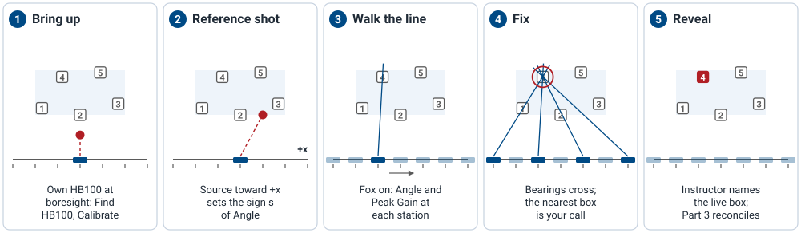

L19 Lab — Fox Hunt#
Fox Hunt
One HB100 is on. Find its box from bearings taken along a firing line.
L19 Lab · Antennas, Phased Arrays, and Radar Systems · Dr. Neil Rogers
Printing
To print the slides, switch to present mode and print: one slide a sheet, with room for notes. Print from read mode for the whole lesson.
Learning Objectives
- I can implement beam steering on the ADALM-PHASER and verify the steered pattern against theory.
The Fox Hunt
One HB100 is on, hidden in one of several numbered boxes.
Take measurements at different points on the table and determine which box contains the HB100.
The L19 Lab puts Lesson 19 on the bench as a fox hunt. A taped firing line runs along the table, and numbered boxes sit downrange of it at positions I measured and posted. Every box holds an HB100, powered or not, so weight gives nothing away; one of them is live.
Your team moves its kit along the firing line, stopping at the station marks taped every 0.75 m. At each station the kit faces straight downrange, square to the tape, so every station shares one heading and the only thing that changes is where along the line you stand. At each station you read the beam sweep’s Angle readout (set to Peak) and Peak Gain. Each angle is a line from that station toward the fox; the lines cross at the fox, and the box nearest the crossing is your call. Peak Gain plays a smaller part: when two boxes sit close to the crossing, the pattern of levels along the line says which one fits.
The Hunt in Five Steps

Steps 1 and 2 happen before the fox goes on: the bring-up on your own HB100, then the reference shot that fixes which end of the tape positive Angle points to. Steps 3 and 4 are the hunt: the same measurement at every station mark, then the fix. Step 5 is mine, and the Part 3 writeup starts from it.
The Range
Element |
Size |
|---|---|
Firing line |
3.0 m of tape, stations every 0.75 m (5) |
Box field |
2.0 m wide, 1.0 to 2.0 m downrange |
Box spacing |
at least 0.75 m center to center |
Footprint |
about \(3\ \text{m} \times 2.5\ \text{m}\) |
The range fits a classroom. The firing line runs 0.5 m past the box field at each end, so a box near the edge still sits within about ±45° of several stations, the edge of what the PHASER can track. The nearest boxes are 1.0 m out, past the 0.88 m far-field distance of Lesson 17, and the farthest are 2.0 m out, where the tone is still well above the floor.
These sizes come from a simulation of the hunt with a bearing error of 2.5°, a bearing off by 10° one time in seven, and an HB100 aimed only roughly at the line: the call names the right box about 86% of the time, and the median fix lands 0.15 m from the fox. A wider room helps less than you might expect; a deeper field hurts more, because depth is the direction a single firing line measures worst.
Pre-Lab
Bring your fox-hunt script, tested, on your laptop.
It finds where the bearings cross, flags a bad one, and ranks the boxes.
Part 1 of the packet, at the end of Lesson 19, walks you through it.
The Pre-Lab is Part 1 of the packet, done before the lab period and listed at the end of Lesson 19. What you need at the bench is the script: start from the starter file, which reads the station and box files and prints the results, write its four functions, and test it on the supplied set of bearings with one bad station in it. The error budget and station plan in Part 1 tell you what to expect: use the stations farthest apart that still detect the fox, because the distance between them sets how well the fix is pinned down in depth.
Range Coordinates
Origin is at the center of the table, on the middle station.
\(x\) runs along the tape, \(y\) straight downrange.
Each Angle draws a line from its station toward the fox.
The reference shot sets which end is positive.
I tape the firing line and mark station 0 at its middle, with stations at \(x = -1.5, -0.75, 0, +0.75, +1.5\ \text{m}\), and post the measured center of every box in the same frame. Place the middle of the array, between E4 and E5, on the station mark, and square the board’s patch face to the tape with a straightedge or a square, so broadside points straight downrange.
Because every station faces the same way, there is no heading to work out. Est. Angle \(\theta_i\) at station \(x_i\) says the fox lies on the line \(x = x_i + y\tan\theta_i\), with \(\theta_i\) positive toward the \(+x\) end of the tape. Whether positive Angle points to \(+x\) depends on which way round the board sits on its stand, which is what the reference shot checks.
The sweep jitters a little from one pass to the next, so read Angle on ten consecutive sweeps from the Tracking tab and use their mean. The spread of those ten, largest minus smallest, should be a degree or two.
What to Expect
Most stations detect the fox, but the far ends may not.
Ten readings at one station agree within a degree or two.
The bearing lines cross within a hand’s width of the live box.
An HB100 radiates mainly forward, so expect two to four of the stations to detect it; a station far off its axis may see a weak tone or none, and one that reads beyond ±45° is past what the PHASER tracks. Skip those and keep going. A good bearing passes within about 0.15 m of the fix; one that misses by far more than the rest is a bad bearing, usually a reflection or a person in the path: retake it, or let your script drop it. The fix should land 0.15 to 0.2 m from the live box, and the boxes are at least 0.75 m apart, so that is close enough to name the right one.
Peak Gain is useful only when Rx Gain (dB) is the same at every station. Your script compares the levels along the line with the shape a source in each candidate box would produce, free-space spreading plus the element roll-off you measured in the L18 Lab, with the overall level fitted out. It cannot give a range on its own: the fox’s aim and the room’s reflections move the level by several dB.
Bring Up the Kit
Browse to your kit’s address and wait for the pill to read Connected.
Place your own powered HB100 1 m out at boresight, facing the array.
Press Find HB100 and record the Signal Freq in the packet.
Press Calibrate and wait for it to finish.
Open Lab Presets, press 1 Steering Angle, and set Rx Gain (dB) for an FFT peak of \(-10 \pm 3\) dBFS.
Press Start, and check the FFT tab for one tone near 0 MHz, at least 20 dB above the floor.
This is the L18 Lab’s bring-up. Calibrate needs your own HB100 at boresight while it runs; it is the only time today a source sits there on purpose. The kit stays on its stand for every reading, pointed at the boxes with its element row level: raising one end of the row tilts the cone of directions and pulls every bearing toward broadside (Lesson 19, “The Cone Angle”), and a kit held by hand reads it wrong by far more than the budget.
Reference Shot
Put the kit on station 0, squared to the tape.
Place your HB100 1 m downrange and 0.5 m toward the \(+x\) end, facing the kit.
Read Angle: about 27°. Record \(s = +1\) if it is positive, −1 if negative.
Switch your HB100 off and disconnect its power for the rest of the period.
When the hunt starts, press Find HB100 again and record the fox’s Signal Freq. Do not press Calibrate.
The reference shot checks two things. The sign gives \(s\), which you apply to every reading so that \(s\,\theta\) is positive toward \(+x\); the size checks the setup, since \(\tan^{-1}(0.5/1.0) = 26.6^\circ\). A reading far from that means the kit is not square to the tape or the source is not where you think.
Step 11 matters. Every HB100 runs at a slightly different frequency, often tens of megahertz apart, and the receiver sees only a few megahertz around the frequency Find HB100 stored. Pressing Find HB100 with only the fox on tunes the kit to it. Keep the calibration from bring-up.
The Hunt
Set Rx Gain (dB) for a clear tone from the fox at station 0 and record it. Leave it there.
Put the kit on a station mark, squared to the tape, broadside downrange.
On the Tracking tab, record ten consecutive Angle readings and Peak Gain.
Repeat at every station that detects the fox, ends first.
Write each row as \(x_i\), \(s\,\bar\theta_i\), Peak Gain into
stations.csv.
Take the end stations first: they set the baseline, and the baseline sets the depth error. Stay out of the line of sight while the kit is reading; a person near the path reflects enough to move the peak. If a station shows no clear tone or reads beyond ±45°, record that and move on rather than turning the kit toward the fox, because a turned kit no longer shares the heading of the others.
Do not change Rx Gain once the hunt starts. The bearings do not care, but the amplitude ranking compares levels across stations and assumes one gain for all of them.
The Call and the Reveal
Run your Pre-Lab script on
stations.csvandboxes.csv, and record the fix, the residuals, and the ranking.If one residual is far larger than the rest, retake that station or accept your script’s drop.
Name the box and tell me before the boxes are opened.
Record the live box after the reveal, then press Stop.
boxes.csv holds the posted box centers. Your script fixes the source from the
bearings alone, ranks the boxes by distance from the fix, and, when the two
nearest are within 0.15 m of each other in distance, uses the amplitude
pattern to choose between them. The call is your team’s, made in class from your
own data. The Part 3 writeup compares your fix with the live box and asks what
changes with the baseline and the depth.
Lab Packet
The L19 Lab packet is one submission per team for the whole lab, turned in complete before Lesson 20. It has three parts:
Part 1, Pre-Lab (before the lab period): the bearing budget with a fixed heading, the across-range and depth errors for this range, a station plan, and the script tested on a supplied set of bearings.
Part 2, Measurements (your team, in class): the reference shot, the bearings and levels from every station, and the call.
Part 3, Writeup (after the lab): the fix against the live box, the error of each bearing, and what the baseline and the depth did to the fix.
Looking Ahead
Keep your bearings, levels, and script: the Part 3 writeup reuses all three.
L20 returns to shaping and steering the beam.
Part 3 is the writeup, done as a team after the lab: how far your fix landed from the live box, the error of each bearing, and what the baseline and the depth did to the fix.
Lesson 20 returns to shaping and steering the beam, starting from the closed-form array factor: where the nulls fall, why the first sidelobe sits 12.8 dB down, and how the beamwidth depends on the number of elements.